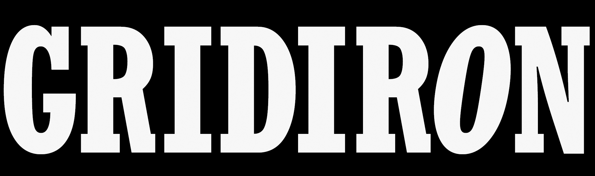

GRIDIRON 2018
April 5-7 • 8pm
Orpheum Theatre
200 N. Broadway
Wichita, KS 67202
Questions about Gridiron?
Email us at info@wichitagridiron.com
Orpheum Theatre
200 N. Broadway
Wichita, KS 67202
Questions about Gridiron?
Email us at info@wichitagridiron.com